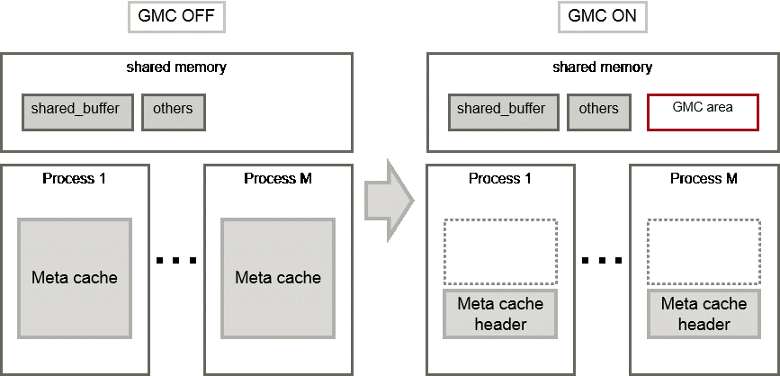

The Global Meta Cache feature cache the meta cache in shared memory. The meta cache on shared memory is called the Global Meta Cache (GMC).
Without this feature, the meta cache was cached in per-process memory. Therefore, there was a problem increase in memory usage in environments with large databases and large numbers of connections. The Global Meta Cache feature enables sharing of meta caches on shared memory, thereby reducing overall system memory usage.
Note
This feature is available only in the Advanced Edition.
Meta cache
Processing a query involves parsing the query, creating the plan, executing the plan, and so on. PostgreSQL process accesses the system catalog to perform these steps. Once accessed, the system catalog tuples are cached in per-process memory. The direct definition is one tuple of system catalogs. Each process performs faster query processing by searching the meta cache instead of searching for the required tuples in the system catalog each time.
The meta cache usage increases in proportion to the number of tables and columns accessed. It is cached on a per-process basis, so the system's overall meta cache usage increases in proportion to the number of connections.
Architecture of Global Meta Cache feature
Describes the architecture of the Global Meta Cache feature.

When the GMC feature is on, the per-process meta cache is cached in the GMC area on shared memory. Reference to the GMC area and process-specific work information is cached in the memory of each process. PostgreSQL process searches the meta cache for each process and accesses the GMC based on the reference information. If there is no reference information in the process's memory, it searches the GMC area. If the GMC area also does not have a corresponding meta cache, it accesses the system catalog to create meta cache.
Also, sharing the meta cache does not cause any loss of data consistency. If the system catalog or table definition changes while a transaction is running, the cache deletion or creation does not affect outside of the process running the transaction. After the transaction commits, the GMC area cache is deleted or created. If other transactions are referencing the cache when GMC is tried to be deleted, the deletion is deferred until there are no more references. After a commit, a new transaction sees the new cache instead of the old one.
See
Global Meta Cache feature is disabled by default. Refer to "Global Meta Cache" in the Operation Guide for information how to decide whether introduce it or not and usage.